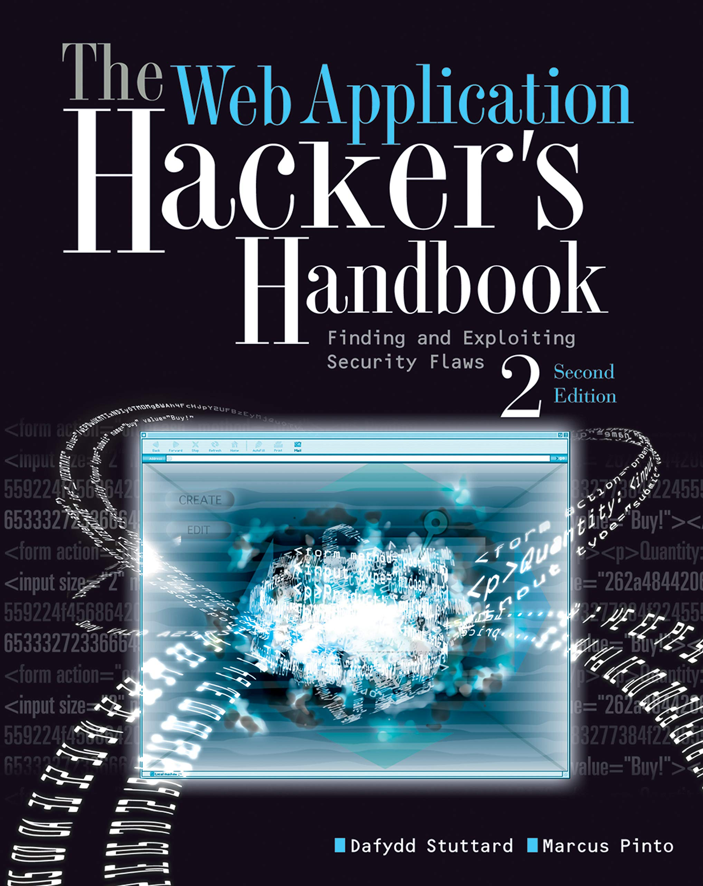

Book 2 : The Web Application Hacker's Handbook : Second Edition
Genre
- Cybersecurity
- Computer Science
- Technical guide
Index Page
- Introduction
- Chapter 1 : Web Application (In)security
- Chapter 2 : Core Defense Mechanisms
Authors
- Dafydd Stuttard & Marcus Pinto
Overview
The Web Application Hacker’s Handbook: Second Edition is a detailed guide to web security, covering vulnerabilities like SQL injection and XSS, along with testing and defense strategies. Ideal for security professionals and developers.
Competitive
It is highly recommended for penetration testers, ethical hackers, web developers, security engineers, and bug bounty hunters, as it provides in-depth techniques for identifying and exploiting web vulnerabilities.